LESSON NUMBER 18 FIRST STEPS TOWARD EXPLAINING THE SUPREME MYSTERY OF LIFE AND DEATH¶
GEOMETOR Revamped Cosmogony Plates
This lesson’s core geometric diagrams have been reconstructed as precision parametric vector plates:

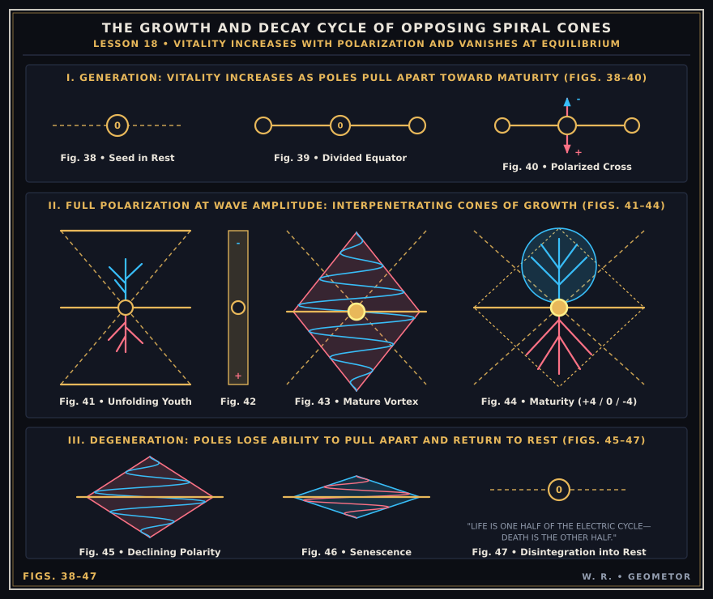
GEOMETOR Vector Reconstruction (Figs. 38–47): The Growth and Decay Cycle of Opposing Spiral Cones.¶
The supreme mystery of life–growth–decay and death is the, as yet, greatest of all unanswered questions of the ages.
It is so much a mystery that science has for centuries been trying to search for the secret of life in some basic, but hidden life germ. There is no such life germ. Life does not exist anywhere in matter, or bodies of matter. Life exists only in God as Mind desire to manifest idea by creating body forms which manifest idea.
To the majority of mankind death is as much accepted reality as life. To them I would be wasting words by saying “There is no death”.
But to you, whose cosmic awareness is unfolding, I can say these words,–and you will believe them intuitively–but you will not understand WHY–nor could you explain it dynamically to anyone.
Yet this is the one thing you most want to know and be able to explain dynamically–even to yourself. This I know because of the many questions the deepest thinkers ask me about life, death, reincarnation, growth from the seed and other seemingly unfathomable mysteries. Platitudes, abstractions, affirmations, faith and belief without knowledge are not satisfying. Knowledge alone will satisfy.
There is nothing difficult to understand about life and death because it is a manifestation of the most obvious thing in Nature.
Let us consider this. What is the most obvious thing in Nature? It is the cyclic repetition of the love principle of giving and regiving as manifested in The Divine Trinity. This eternal repetition is the very basis of Creation.
Everything in Nature appears–disappears–BUT REAPPEARS.
That which comes must go, but it must come again forever.
Day is born from night to become night. But night is not death, because it borned day. Likewise death borns life, and life again borns death, as all opposite effects forever do.
The concept of life and death grew out of the belief that our bodies are our personal Selves, and that bodies live–then cease to live.
Our Selves are eternal. Our Personal Selves have not been created. We but manifest our Selves in moving bodies by eternal repetition of bodies which we create to use as instruments until they can no longer function as bodies. Then we create another one. And we continue to do that until our purpose is fulfilled as individual units of Creation.
The only things which come and go are B O D I E S.
Bodies do not live–nor do they die. They but function as tools for the length of their cycles, then wear out. Bodies are but waves of motion, and motion is not life.
Creation is an ever renewing, ever repeating bodily manifestation of Mind thinking. Creating bodies manifest idea, but bodies are not the idea they manifest. Likewise bodies manifest life and death but they are not life and death.
LIFE and DEATH are but thought cycles of concentrative thinking followed by decentrative thinking. Each is but one half of a cycle of electric wave motion. Motion does not live nor die. It but expresses life and death by polarization and depolarization.
Creation is but an electric wave record of thoughts.
Thoughts do not live or die. Thoughts are Mind expressions. Thoughts are but Mind imaginings which come and go from their Source in Mind.
But MIND does not come and go–for Mind is eternal.
God is Mind–and God alone LIVES.
God created His body but He did not create L I F E. He created bodies to manifest life and love which is in Him–but the bodies He created are not God–nor do they live–or die–or love–or have knowledge.
He alone can die who believes in death, but he who knows the Light of God as one with him can never die.
This thought is so beautifully expressed by God’s own word in The Divine Iliad:
“He who seeks life without the Light will find death: but he who seeks the Light will find eternal life even when he walks toward death.
“He who knows not the Light shall die to find it, but he who knows the Light shall never die.
“In man’s inhaling there is life, and death trails his exhaling, yet must man breathe in to live again and deeply in that he may die.
“Know thou then that I alone live. I do not die, but out of Me comes both seeming life and death.
“Life is but the inward flow of My thinking’s divided pulsing, [and] death is its outward flow.
“Know also that the divisions of My thinking are but equal halves of One: for I again say that I am One: and that all things which come from Me are One, divided to appear as two.
“All things come and go from my divided thinking.
“All coming things are living things, and those which go are dead.
“Know thou that all creating things are resurrected from the dead, and dead things live again through My divided thinking.
“Again I say that all things are bound as One through Light.
“I am forever creating My living body and destroying it in seeming death that it may live in Me to die and live again.
“The end of life in death is life’s new beginning. Both life and death are one in Me.
“All things are forever living and forever dying; and while they live they die; and also while they are in death the live.
“Such is My decree, My universal law, from which there is no escape for man, or star, or grain of sand; for all things flow from Me that they may appear to Man, and return to Me, that they may disappear from his senses in the cycle of My thinking.
“I am the repetitive God. All things which flow to Me and from Me flow again both ways through Me forever in a cycle which ends not, nor has begun.
“From My right hand life flows one way and returns to Me full spent as death, while full death flows the other way and returns to Me renewed as life. Around My cycle both life and death wend their opposed ways, each seeking each until the twain meet balanced at maturity, where each gives half to each. But when they pass that halfway point on their separate ways to Me, each then gives thought to each, and then both know, as they return to Me, that each are both, and both are One in Me.
“Death is the seed of life.
“Death rebounds from death as life.
“From death life springs from the soil; and from life death flows even as the perfume leaves the rose.
“Death gives of itself to life that life may live; and likewise does life give to death that death may die.
“Life is regenerating death, and death is life degenerating.
“Light leaves thy sun as death and comes to thee as life; and when thy death leaves thee it likewise becomes new life to whom, Of what, its impact quickens with thy death.
“Two ways there are of breath, the inward-charging breath of life and the outward-discharging breath of death. All opposed pairs of My divided thinking pass in opposite ways along these two paths, in the traversing of My cycle.
“All things which I have divided into pairs of opposites have within them both life and death; but one of these is greater than the other until they meet as equals half way round My life-death cycle.
“When once they meet, and pass, they then exchange these qualities, the greater growing lesser and the lesser growing greater.
“Even though life is full when life is born, death emanates from life itself as death, and takes the opposite path toward death.
“Likewise does life emanate from death to weaken it when life is strong, until life conquers death to make death live as life.
“Verily I say, life cannot live without dying as it lives. Nor can death conquer life and gather naught to it but death.
“Life is My changing breath of compressive action; and death is My discharging, opposed breath which expands as life’s reaction.
“Hear thou Me when I again say that life and death are opposites which pass each other on My cycle going both ways. Life attracts life to life by its contraction and death repels both death and life by its expansion.
“I am not life, nor am I death. From Me both spring; and through me both flow both ways toward unity, first in My manifested Self and then in Me, yet am I not touched in both their passings.
“I am the interchanging point of life and death. I balance life with death; and never in their changing can either death or life outbalance death or life.
“Write thou that death and life are one, as the swinging pendulum is one, e’en though it oscillates two ways in its incessant swinging.
“He who travels East in My curved universe arrives at West as surely as he who travels West.
“Likewise does life travel the eastern road to arrive at death, while death takes the eastern road where life awaits to quicken death as life.
“So also does death trail the road of life to interchange with life, while life likewise trails the road of death to find itself through death.
“Hear thou Me say there is no death in all My imagined universe. In it is naught but Life, for naught but Life and Love is in Me and My Knowing.
“Naught is there in My thinking which is not My Knowing; and naught but Life and Love are in My thinking.
“Take thou man’s death away from him in this new day of man. Give him eternal Life in Me by knowing Me in him.”
From THE DIVINE ILIAD
ANALYSIS OF THE LIFE-DEATH CYCLE¶
When I wrote these immortal words of our Father-Mother while in the Light with Him, I was fully aware of their dynamic meaning and the mechanics of His thinking processes by means of which he manifested His idea in formed bodies which come, and go, and come again forever.
I fully knew that any idea which comes and goes is ONE in both its coming and going. In my full knowing I could not differentiate one from the other, therefore I could not differentiate life from death nor death from life.
To me the morning light of day which walks toward noon is the same light which walks away from noon to again be the morning light to walk again toward noon. Knowing the cause of undivided light of the sun which has no morning, noon or night in its eternal unchanging oneness, and knowing that the divided, ever changing day of earth is but extended from its undivided cause, I knew both life and death for what they were, and not for what they seemed to be.
To you, however, who read these immortal words without that knowing, they are but words until your Soul knows their meaning in God’s plan which simulates eternity by dividing all idea of His into pairs of opposite expressions which eternally repeat their opposite expressions to create an illusion of continual change.
That is what confuses you and all mankind. You see the continual change in every moment of the day, and every form in it, and of every event in It. Something is moving and changing during your whole day and night of life to force you to think complexly. You cannot evade that confusion while your senses record naught but changing.
Confusion of the senses disappears through knowing the changeless Source of all illusion. To the extent that you KNOW the Source the confusion of ELIE senses will disappear.
The reason God gave you the Divine Iliad Message is to give you that knowing, and the purpose of it is the further unfolding of the man idea upon this planet.
In order to give you that knowing you must discard age old concepts which your senses have built up from the confusion of change and replace them with new concepts formed from knowing the changeless Source of undivided Oneness from which the divided universe of many changing, moving forms extend.
In order to build these new concepts we must become thoroughly familiar with the way God extends all changing forms of divided idea from their changeless Source in His Light. We will do that by the repeated use of diagrams and word pictures of simple examples of forever changing things which manifest eternal Life by Life’s division into seeming life and death.
In beginning to explain the principle which lies behind life and death let me remind you that Creation is the extension of God’s One Whole Idea divided into countless many FORMS of many ideas imagined by Mind thinking.
The form of any idea is not the idea thus extended. It is but the material body of the idea.
Idea is undivided and changeless. Idea has no body. Thinking takes idea apart and gives it thought bodies which are then manifested in material bodies.
Idea does not come and go. It is but the bodies of ideas which come and go. It is but the formed bodies of ideas which appear, disappear and reappear in what we call life, death and rebirth. These transient bodies simulate idea by form and motion but transient moving form cannot be the eternal idea which it manifests in forever repeated cycles.
Remember then, that it is the repeated cycles of manifested ideas which confuses you into thinking life and death, and not the idea itself. Idea is eternal and has no cycles. The BODIES of ideas only are pressed in cycles.
Cycles come and go–they begin and end, and begin again where they end–they appear and disappear to reappear–as bodies of PATTERNED thoughts.
It will clarify this life-death mystery to go through the process of building bodies from the eternal zero in the Light of their beginning, through the cycle of their appearance, and back into their disappearance in their eternal zero of equilibrium from which they emerged.
We will first build the body of a tree from its beginning as a part of God’s One Whole Idea of Creation.
We plant an acorn seed in the ground. In that seed is a million years of repeated life-death cycles. In that seed is the record of every stage of unfolding of that idea from its beginning as a mold, or fungus, up through the stages of desire to become what it desired to be which was in that seed a million years ago.
Examine it with the finest microscope and you will not see one trace of the body of an oak, yet out of it comes the full grown oak of many branches and leaves, no two of them alike.
That seed is the undivided father-mother idea of the eternal oak which is about to be divided into pairs of opposite father and mother conditions which produce bodies by interchanging their conditions.
All creating bodies begin from a zero point of balance which become their equators,–extend to allotted measures limited by desire–and return to the zero of their equators to give back the bodies they have borrowed from each side of it.
Let me impress upon you the fact that the seed is but the Soul record of Mind idea. It has no material body but it has a thought body which is patterned in the image of the thought. It is the Mind concept of an oak tree not yet conceived as a body in its mother’s womb.
By saying that it is not yet conceived in its mother’s womb I mean that it has not yet begun to be divided from its spiritual ONENESS of FATHER-MOTHERHOOD into its physical manifestation of The Divine Trinity as expressed by the division into father and motherhood.
Fig. 38 represents the beginning of this division by planting the patterned seed in the womb of mother earth.
Fig. 39 represents the static measure of desire for extension which is in the seed. The zero of the seed centers the two equilibrium zeros extended from it. The seed is the still fulcrum from which the tree will borrow its power to become a tree, as the lever likewise borrows its power from its fulcrum.
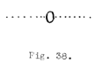
Archival Plate (image037.gif)¶
It must be thoroughly known and comprehended that the dimensions of the full grown tree, including the duration of its life cycle, are as meticulously recorded in its seed as are the patterns of its wood and foliage. That which appears to exist in the visible universe really exists in the invisible universe. The invisible idea is eternal.
The moment the division of the seed takes place the dimension of its former “incarnations” are already surveyed by the magnetic Surveyor of Creation and invisibly marked out for it upon both sides of its equator.
Fig. 40, therefore, represents the dimension of the two-way dynamic diameter extending at 90 degrees from the static diameter of earth. The dynamic dynameter [diameter] is the equator which is being prepared in earth and space which divides, balances and reverses the halves of the growing body. To review this idea in your mind turn back to Fig. 20.
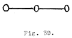
Archival Plate (image038.gif)¶
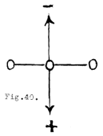
Archival Plate (image039.gif)¶
Fig. 41 represents the two extended static diameters which bound the predestined dimensions of the tree in accord with the dimensions of desire which have been registered in its seed. It can go beyond these dimensions if new desire is added to the seed, such as extra favorable soil, and weather conditions. This added desire can be given to it by man who adds his desire for a better tree to that of the desire of the tree.
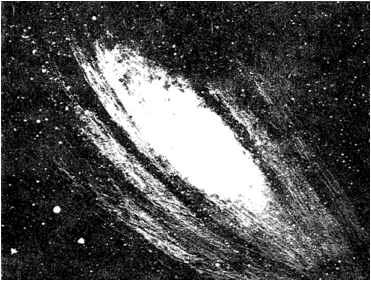
Archival Plate (image040.gif)¶
In Fig. 41 the division has already taken place and the newborn tree has extended from its womb in the negative direction of motherhood toward space while its roots have extended in the positive direction of gravitation toward fatherhood.
The important facts for you to take note of at this stage are these.
1 - The division which begins to take place in the seed by the electric pumping action develops a negative and positive (polarized) condition above and below the equator where the division begins.
2 - The positive direction of concentration is inward toward gravity. The roots of the tree follow that direction. The negative direction of decentration is outward toward space. The growing tree follows this outward direction.
3 - Now carefully note the fact that positive electricity and negative electricity turn their backs to each other and pull away from each other as hard as they can to divide a static condition into a dynamic one. This is a very important point for you to take note of because science believes just the opposite of what Nature so obviously and plainly demonstrates. In fact the Coulomb electric law states that opposites attract and likes repel. As we proceed you will see how utterly unlike Nature that law is.
Electricity is the divider of one balanced, unchanging condition of stillness into two unbalanced conditions of ever changing motion which interchanges constantly to balance those unbalanced conditions to express LIFE–and to void them to express DEATH.
Positive electricity and negative electricity are diametrically opposed to each other. Positive electricity charges by multiplying motion into higher potential to manifest LIFE, and negative electricity discharges that potential by dividing it to manifest DEATH.
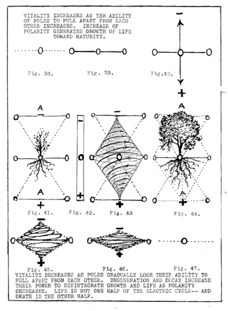
Archival Plate (image041.gif)¶
This is not the proper place to expand this idea but if you will look at a bar magnet you will find that it does just what the seed of the tree does. The electric current which divides the seed at its equilibrium point to pull one half of the tree inward to the positive center of the heart and the other half outward toward the negative area of the skies does exactly the same thing to a bar magnet.
Fig. 42 represents a bar magnet which is a prototype of all growing things. It is a division of stillness into polarized motion. The electric current which polarized the bar magnet pushed both poles away from each other as far as they would go. Positive and negative electricity turn their backs upon each other at their starting point. That is what polarity is–a division into pairs of opposite directions of motion, which create opposite conditions–and opposites oppose. If they attracted each other their opposite poles would be in the middle of the bar–not at its ends–and straining to go farther. See Fig. 43.
The workings of electricity have been grossly misunderstood, which is very strange, for man has known how to use it wonderfully, but has practically no knowledge of what it is or the WHY of it.
It is just as necessary for YOU to fully understand its workings as for the greatest scientist in the world, because electricity is the pump which motivates your body–and it is what you use to think with.
Electricity manifests the basic principle of Creation–the LOVE principle of equal giving and regiving–which is the principle of balance upon which your every thought and action is based.
4 - As the tree grows two ways to manifest life it is gradually approaching the two points marked A in Figs. 41 and 44 where that which we call life ends and death begins.
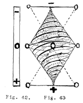
Archival Plate (image042.gif)¶
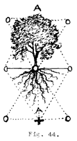
Archival Plate (image043.gif)¶
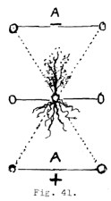
Archival Plate (image044.gif)¶
5 - As the tree grows by unfolding outward from its seed it simultaneously refolds inward toward its seed. The pattern of every action of the tree is recorded in the magnetic Light of its seed. Later on you will marvel at this miracle of God’s recording system by means of which every unfolding idea is carried over from one body to another for ages. This recording system will be explained in detail in later lessons.
6 - In the divided universe one half of every creating thing is on the positive side of its equator and the other half on its opposite side. Each of these is dependent upon the other. That part of the tree which is under the ground interchanges with the part which is above ground. This is as true of a man, or planet, or industrial plant as it is of a tree.
7 - The underground half is the forming body in the womb of earth and the upper half is the forming seed pattern which returns to the womb of earth for reborning.
8 - When the full grown tree (or man or planet) has reached the limits of its generating powers it then begins to degenerate. To generate means to increase its polarizing power. To degenerate means a gradual depolarization.
Figures 45 and 46 represent this gradual depolarization which takes place as desire weakens to manifest idea in body form. Fig. 47 represents the complete refoldment of the idea of that tree into its seed. Depolarization is complete. That desire to divide the undivided is now at rest in the patterned record of its seed, just as it was in Fig. 38.
CONCLUSION¶
If you will now re-read God’s words at the beginning of this chapter, you will understand them better because of these diagrams explaining the growth and decay of a tree.
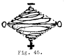
Archival Plate (image045.gif)¶
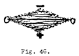
Archival Plate (image046.gif)¶
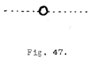
Archival Plate (image047.gif)¶
Meditate deeply upon this subject and you will find that there is no part of this journey of the tree from its appearance to its disappearance, that you could call life without as appropriately and truthfully calling it death.
Nor is there a part of it that you could call its beginning or its end.
Nor is the fulcrum which the tree used to extend itself into a tree any different from the fulcrum you use to extend yourself into a man. Nor are you freed from your roots underground because you can walk away from them, for you are as much bound to them as the tree is. We will talk about this in the next lesson.